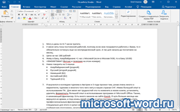

| Категория: | Текстовый редактор | |
| Поддерживаемые ОС: | Windows 8 | |
| Разрядность: | 32 bit, 64 bit, x32, x64 | |
| Для устройств: | Компьютер | |
| Язык интерфейса: | На Русском | |
| Версия: | Бесплатно | |
| Разработчик: | Microsoft |
Без труда можно скачать бесплатно Word для Windows 8 – лучший офисный софт для написания, чтения и редактирования статей и документов. Если человек в любой точке мира пишет текст на компьютере, он почти наверняка делает это с помощью Ворда. А формат .doc настолько распространился, что если создать программу конкурент без его поддержки, ее едва ли кто-то купит.
 |
 |
 |
{kind=link}
Microsoft Word для Виндовс 8 на компьютер
Самая свежая версия софта под названием Word 2019 вышла в 2018 году. Она уже не запускается на Windows 8. Поэтому последняя актуальная редакция для «восьмерки» — Word 2016. По сравнению с предшественницами, она стала легче в освоении. Microsoft добавили свежие темы, упростили интерфейс и добавили поиск по функциям. 16-й Ворд наконец-то научился полноценно работать со стилусами и корректно превращать написанные от руки уравнения в готовый текст. Но главная изюминка – возможность параллельно работать над документами вместе с коллегами. В том числе – через встроенный в редактор Skype.
Фанаты Word 13 также смогут запустить его на Windows 8. Его интерфейс подходит к общему визуальному стилю «восьмерки». Это проверенная временем версия с богатым, современным функционалом, которая в свое время стала едва ли не революцией. Так, здесь впервые появилась поддержка .PDF. Кроме того, Microsoft решили главную беду Word 2010 – кошмарную вставку картинок в документ. Теперь, вместо мучительно баганного и неточного подгона изображения по размеру, появилось удобное меню разметки. Вдобавок, Word синхронизируется с облачным хранилищем, и документы можно быстро скачать откуда угодно.
Microsoft Word для версий windows:
Скачать Word для Windows 8 бесплатно
| Приложение | OS | Распаковщик | Формат | Версия | Торрент | Загрузка |
|---|---|---|---|---|---|---|
| Microsoft Word 2016 | Windows 8 | OpenBox | x32 | Бесплатно (на русском) | ||
| Microsoft Word 2013 | Windows 8 | OpenBox | x32 | Бесплатно (на русском) | ||
| Microsoft Word 2010 | Windows 8 | OpenBox | x32 | Бесплатно (на русском) | ||
| Microsoft Word 2007 | Windows 8 | OpenBox | x32 — x64 | Бесплатно (на русском) | ||
| Microsoft Word 2003 | Windows 8 | OpenBox | x32 — x64 | Бесплатно (на русском) |
Как установить Microsoft Word:
Запустите установочный файл.
Запустите файл.

Ознакомьтесь с информацией и нажмите "Далее".

Нажмите "Далее", или снимите галочки с рекомендуемого ПО и нажмите "Далее". Если снять все галочки, рекомендуемое ПО не установится!

После всех шагов дождитесь предварительной загрузки.
Обе версии полностью локализовали на русский язык, так что разобраться в базовых возможностях сможет даже чайник за считанные минуты. Microsoft Word 2013 и 2016 продают в составе пакетов Office. Обычному пользователю с головой хватит базового пакета, куда сразу же включают и другие «хиты» Майкрософт, вроде Excel и PowerPoint. А для требовательной аудитории есть и расширенные версии Office с программами для менеджмента, создания баз данных и издательства.
Такая программа всегда нужна
всё отлично скачал без проблем
долго искала нормальный софт
на восмерку очень трудно найти ворд без вирусов и не забогованую
Спасибо
Программа работает
с картинками + Видео
проверю пожалуй